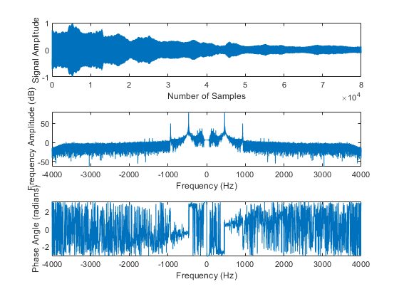
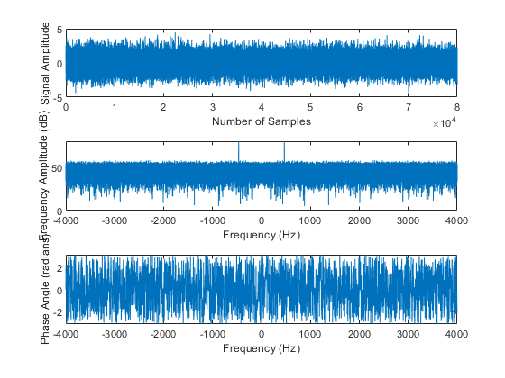
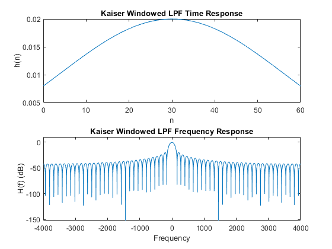
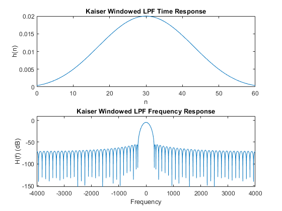
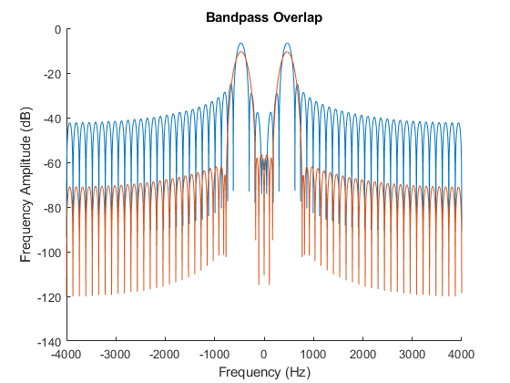
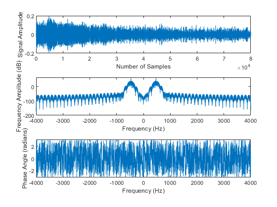

ENGR 362 Term Project
By Jacob Vanzella (49157654)
In this project a tuning fork recording will have noise added to it,
and the noise should subsequently be cleaned through digitial
filtering. The main undertaking in this project is the filter design
process. The filter design consideration will be justified here
briefly, and the implementation can be seen below, and in the
accompanying functions.
By taking the Fourier transform of the tuning fork recording it can be
seen that the maximum frequency component Fm = 466 Hz, see the plot
generated by the analyzeAudio function call in 1.1. This 466 Hz
frequency is identical to the tuning for label. Knowing the frequency
that needs to be isolated, the design process can begin.
The general steps of filter design are:
1. Choosing a windowing function. In the project, a Kaiser window was
chosen as it provides an effective way of tailoring the response of
the filter by adjusting the \alpha a parameter and the low pass
cut-off frequency.
2. Chosing the filter parameter M, such that
Contents
1.0: Initialization of Workspace
clear; close all; clc;
load('466-2.mat');
M = 30;
Fc = 80;
Fm = 466;
n = linspace(0,2*M,2*M+1)';
delay = Fm/Fs;
alpha1 = 1;
alpha2 = 5;
1.1: Analysis and Noise Addition of Signal
DFT_myRecording = analyzeAudio(myRecording, Fs, N);
myNoisyRec = myRecording + randn(N, 1);
DFT_myNoisyRec = analyzeAudio(myNoisyRec, Fs, N);
 
1.2: Filter Calculation
hKaiserLPF1 = kaiserLPF(M,N,Fs,Fc,alpha1);
hKaiserLPF2 = kaiserLPF(M,N,Fs,Fc,alpha2);
hKaiserLPF1 = real(hKaiserLPF1.*exp(j*2*pi*delay*n));
hKaiserLPF2 = real(hKaiserLPF2.*exp(j*2*pi*delay*n));
frequency = linspace(-Fs/2 ,Fs/2,N)';
figure;
hold on;
plot(frequency, 20*log10(abs(fftshift(fft(hKaiserLPF1,N)))));
plot(frequency, 20*log10(abs(fftshift(fft(hKaiserLPF2,N)))));
xlabel('Frequency (Hz)');
ylabel('Frequency Amplitude (dB)');
title('Bandpass Overlap');
hold off;
  
1.3: Noise Filtration and Filtered Signal Analysis
myCleanRec = noiseFilter(myNoisyRec, hKaiserLPF1, hKaiserLPF2);
analyzeAudio(myCleanRec, Fs, N);

1.4: Playback Audio
disp('done')
done